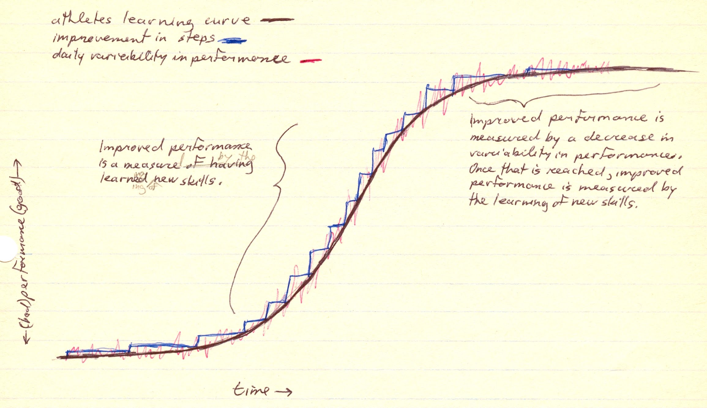

|
ch2 Self-Directed Coaching Manual
ch 2) MONITORING SPORTS PERFORMANCE
MEASURING RESULTS We can use scientific method to improve the accuracy of measuring performance, and hence improve accuracy of goal setting. I am a strong advocate of the scientific method and the community behind it, but a full discussion of this is beyond the scope of this manual. I will quickly review some of the lines of thought in this discipline and leave it up to you to explore it further. Scientific methodology is a logical procedure used to describe and infer natural phenomenon. It gives us the ability to conclude whether our performance result happened by chance alone, or because of our intervening variable, or because of a confounding variable. For example, our improved performance (DV) could be as a result of our equipment change (IV) that we deliberately made, or by a confounding variable (we had cherrios for breakfast instead of wheaties), or by some other unexplained phenomenon (by chance). When we carefully control these variables we can make some statistically probable decisions as to which situation did indeed occur. The goal of the athlete is to increase the probability of good performances and at the same time decrease the probability of bad performances. Retrospectively, we can say that we are increasing the probability of protective factors and decreasing the probability of risk factors. Here is a summary of scientific methods that can be used in sport application. We can make all our decisions based on our personal statistical norms. We consider our average performance and not our absolute best or worst performances. Specifically, consider our average course conditions, our average personal performance. We can make an operational definition of the dynamics and other physiological and emotional aspects of our movements. I discussed this earlier in this section. Then we can compare ourself to others or ourself to ourself. The scientific method is an amazing tool, so do let my generalizations trivialize the great techniques used in scientific thought. In the scientific community we do not sell ideas, we prove them. The oxymoron is that we can never completely prove an idea. The best we can do is suggest a possibility. In the words of Socrates, “wisest is she who knows that she does not know”. As long as we are comfortable living without absolute truths, we will be able to think out our goals more accurately in terms of probabilities. It will be easy for us to make choices based on realities, and not quick rationalizations.
SCIENTIFIC METHODOLOGY Scientific methodology is a logical procedure used to describe and infer natural phenomenon. It gives us the ability to conclude whether our performance result happened by chance alone, or because of our intervening variable, or because of a confounding variable. An intervening variable or independent variable (IV) is what we are changing. A dependent variable (DV) is what we are measuring. The change in measure depends on what was changed: IV. A confounding variable is something other than our intervening variable making the change. A placebo in medicine is a confounding variable. By chance alone, it is meant that there is no knowledge as to why things happened as they did. The results happen “by chance”. When we carefully control these variables we can make some statistically probable decisions as to which situation did occur. Scientific explanations are built on previously existing data. Vaguely stated, previous data is either re-proven, disproved or extended. One scientist research ideas are built on the shoulders of thousands of others. Together, this becomes a scientific community, in which schools of thought develop and evolve. Scientific evidence is considered either conclusive, or not conclusive. Conclusive evidence is when the situation under study is operationally defined with good controls. The intervening variable produced the dependent variable as predicted. An operational definition is an explanation of an experience in terms of what “operations” happen in the event. Controls are the factors in the environment that reduce the probability of confounding variables. We “control” the environment and hence all assumptions of the situation. Inconclusive evidence means that we cannot conclude anything from the study. There is bad validity and/or bad reliability, and/or bad controls. Validity means that what we think that we are measuring is indeed what is being measured. Reliability means that under the same conditions the results would be the same. Causality is rare in the natural scientific world. Human behavior is a result of many variables so in psychology we talk of risk factors and protective factors. Risk factors increase the probability of problems, while protective factors decrease the probability of problems. MethodologyFigure 2-1: Measuring Performance on the Athlete’s Learning Curve low level athletes: DV as improved performancehigh level athletes: DV as reduced variability (increased consistency) in performance affect: IV --------- the changing factor effect: DV -------- the result 
Consider the following when measuring our performance results. What we are measuring varies depending on whether we are average or elite level athlete. For an average athlete our performance, called dependent variable, DV, is measured directly by our improved performance. Improved performance is based on variables the competition judges use to measure our standing. For an elite athlete, our performance, called dependent variable, DV, is measured by reduced variability in our performance. The learning curve at this point has flattened out, so a reduced variability in our performance, increases the consistency in our performance, which is overall improvement. Once high consistency has been reached, we can take the next step towards improvement. We use inductive reasoning to define something that has not yet happened. For example, inductive reasoning is used to define shape of a learning curve into the future. Inductive reasoning is the decision process used to come up with new idea based on what has happened in the past and other relevant knowledge. We will have to use this line of thought extensively when designing our athletic program. We can prove the learning curves’ reliability (consistency) and validity (does what I say it would do) in retrospect only. Now lets quickly recap the scientific method and what it can do to measure sports performance. Real time research is dictated by real time situation and response from stimuli. A scientific explanation builds on previous and existing data. Conclusive evidence means that under specific conditions with good controls, IV predicts DVs. Inconclusive evidence means bad validity, reliability, controls. Causality is rare, so we talk of risk and protective factors instead. Goal of scientific methodology is ability to control whether result is by chance alone or because of intervening variable. The reason we use science, and specifically principles of psychology, is to develop control of a matter. The strength in science of psychology is its continual interest in defining explicit ways to measure behavior (what you do). All human perception and reaction is individually selective. Behavior can be measured directly, from how our body is moving while we perform sport. Behavior is influenced by what we think and feel. These identities can be measured as well. We do not know mind-body connection, but we do know correlations. Behavior is influenced by environment surroundings. Athletes must feel comfortable in training and team environment. Then improvement can be nurtured by controlling how athlete perceives and reacts to sport task. Perception and reactions can also be measured. SPORT PSYCHOLOGY Sport psychology was first defined in 1978 by Singer as "the science of psychology applied to sport". It provides two types of services: performance enhancement strategies, and counseling for athletes. Psychology is one if the youngest of all scientific disciplines, with its official recognition in 1879. The sub-discipline of sport psychology has only been researched extensively since 1965. In 1985, the Division of Exercise and Sport Psychology was recognized by the American Psychological Association. Today it is required that both athlete and coach use sport psychology principles to remain competitive. Many sound research findings are already available, but they are still not being communicated to athletes and coaches in a comprehensible format. All coaching methodologies use some sort of sport psychology principles. Traditionally, sport psychology studies motivation, fears, anxieties and social issues. I believe that the main strength in the science of psychology, and hence in sport psychology, is in its continual interest in defining explicit ways to measure behavior, i.e. what you do. With these methods, learning strategies (learning skills and retrieval cues), performing strategies (priming and attentional strategies), and measuring of performance can be very precisely developed. Differential psychology is the study of individual differences in behavior, opposed to normative or average behavior. Specifically, it identifies and measures individual abilities and traits. Differential psychology has been used in the study of intelligence, which led to the identification of the components of intelligence. This led to tests to quantify an individuals' level of these components. (i.e. general intelligence). Motor learning follows a similar pattern of studying individual differences such as identification and measurement of motor abilities. This is not an easy task, so there are very few studies following this pattern. It follows, that it is even harder to quantify good neuropsychological applications that aid motor learning and performing. For now, the best an elite athletes can do is use a self-directed process to reach their personal potential. The quantified evidence will come with time. [end of chapter2] SDCM home |